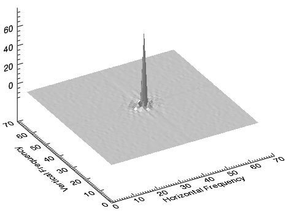
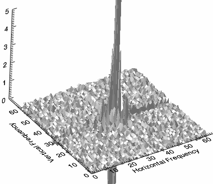
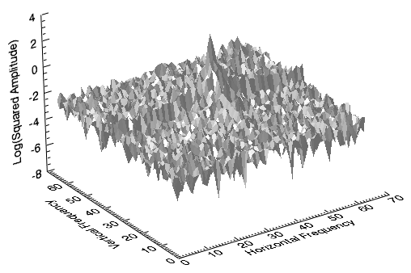

In image processing, the most common way to represent pixel location is in the spatial domain by column ( x ), row ( y ), and z (value). But sometimes image processing routines may be slow or inefficient in the spatial domain, requiring a transformation to a different domain that offers compression benefits.
A common transformation is from the spatial to the frequency (or Fourier ) domain. The frequency domain is the basis for many image filters used to remove noise, sharpen an image, analyze repeating patterns, or extract features. In the frequency domain, pixel location is represented by its x - and y -frequencies and its value is represented by amplitude.
The Fast Fourier Transform (FFT) is commonly used to transform an image between the spatial and frequency domain. Unlike other domains such as Hough and Radon , the FFT method preserves all original data. Plus, FFT fully transforms images into the frequency domain, unlike time-frequency or wavelet transforms. The FFT decomposes an image into sines and cosines of varying amplitudes and phases, which reveals repeating patterns within the image.
Low frequencies represent gradual variations in the image; they contain the most information because they determine the overall shape or pattern in the image. High frequencies correspond to abrupt variations in the image; they provide more detail in the image, but they contain more noise. One way to filter out background noise is to apply a mask. See Use FFT to Reduce Background Noise for an example.
When using a forward FFT to transform an image from the spatial to frequency domain, the lowest frequencies are often shown by a large peak in the center of the data. The following image shows an example. Here, the result of an FFT function was plotted as a surface, with the origin (0,0) of the x- and y-frequencies shifted to the center. Frequency of magnitude then increases with distance from the origin:

The range of values from the low-frequency peak to the high-frequency noise is extreme, which reveals that the image has some background noise. For a more detailed view, you can create another surface plot of the power spectrum while rescaling the z-axis to a smaller range. The following image shows an example. Here, the z-axis ranges from 0 to 5:

The central peak is surrounded by smaller peaks containing both high-frequency information and noise.
For a different perspective, you can display a surface of the power spectrum , which is the absolute value squared of the transform. Then use a base 10 logarithmic scale to display positive values of the power spectrum while retaining the shape of the surface. The following image shows an example. Here, low- and high-frequency information are visible and the noise appears random:

A surface representation of the power spectrum helps to determine the threshold needed to remove the noise from the image. Then you could create a mask to filter out the noise and compute an inverse FFT to produce a clearer image. See Use FFT to Reduce Background Noise for an example of this entire process.